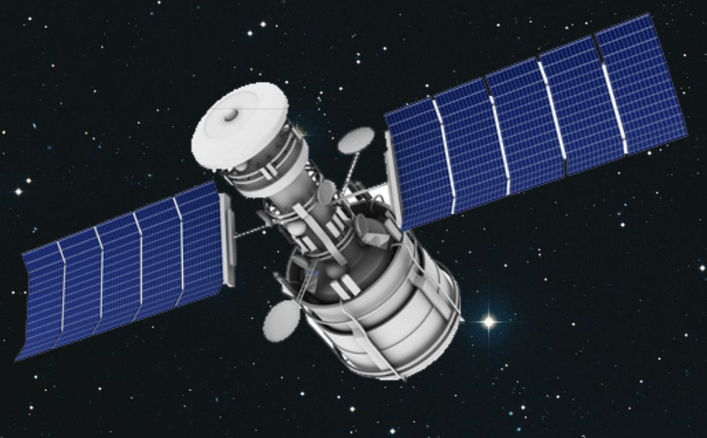

Pollution terrestre
Pollution spatiale
Pollution planétaire
Pollution terrestre
Pollution spatiale
Pollution planétaire


Les multiples collisions entre engins spatiaux ont créé une infinité de débris pouvant causer de nombreux problèmes.
quelques chiffres
Depuis 1957, en orbite autour de la Terre, se sont plus de 60 000 engins spatiaux qui ont été envoyés dans l'espace.
On dénombre environ 30 000 débris de plus de 10 cm, 750 000 débris de plus de 1 cm 150 000 000 débris de plus de 1 mm
 10 cm comme
10 cm comme 
Parmi ces débris on retrouve 41% de fragments, 13% de débris opérationnels, 17% d'étages supérieurs de lanceurs et enfin 22% de satellites plus en état de fonctionner.
Ces 22% de satellite non-fonctionnels représentent aussi le nombre de satellites envoyés dans l'espace mais qui n'ont pas résisté à l'envoi et qui se sont cassés ou détruits, qui sont devenus inutilisable une fois arrivés en orbite. Au total plus de 150 780 000 débris spatiaux gravitent autour de la Terre
Aujourd'hui plus que jamais ces débris représentent un risque important pour les satellites actifs en orbite, en effet un débris se déplace à plus de 55.000 km/h dans l'espace il arrive que des débris se heurtent à des satellite et risque de les détériorer et ainsi les rendre inutilisable. Il arrive aussi que les débris se heurtent entre eux c'est ce qu'on appelle le syndrome de Kessler.
le syndrôme kessler
Le syndrome de Kessler explique pourquoi le nombre de débris à doublé depuis 25ans. Lorsque deux gros débris se rencontre, ils se percutent à une très grande vitesse tout les deux en se percutant ils se détruisent en des milliers de petits débris de moins de 1cm, nous passons donc de 2 gros débris de 10cm à des milliers de 1cm en orbite autour de la Terre.
Ce phénomène arrive souvent et se multiplie à cause de la multiplication des appareils en orbite. De ce fait même si l'Homme décide un jour de ne plus envoyer d'engins dans l'espace le nombre de débris spatiaux augmentera continuellement à cause de ce syndrome.
les solutions
Pour faire en sorte de nettoyer et faire le tri dans les débris présents en orbite quelques solutions ont été mises en place :
Fixer des petits moteurs aux débris afin qu'ils soient propulsés dans l'atmosphère
Accrocher des ballons ou des voiles sur les déchets pour accentuer les frottements sur la haute atmosphère et accélérer leur chute naturelle
Envoyer des "satellites éboueurs", se sont des satellites équipés d’un harpon ou de filet et qui auront pour mission d'attraper les débris et de les pousser vers la Terre pour accélérer leur descente et ainsi qu'ils se désintègrent dans l'atmosphère
Pour faire en sorte en amont que les satellites en fin de vie n’encombrent pas l'espace plusieurs techniques sont possible. Il est possible d'envoyer un astronaute pour monter sur les satellites et y mettre des systèmes afin de les éloigner de la Terre une fois qu’ils ont fini leur travail ou alors au contraire de les rapprocher pour qu’ils se désintègrent dans l'atmosphère.
Malheureusement ces systèmes n'étant pas obligatoires, peu de personnes les appliquent. Dans les lois de l'espace il est interdit pour quiconque de s'occuper de nettoyer l'espace des débris qui ne lui appartiennent pas. C'est comme si nous avions une solution pour nettoyer mais que nous n'avions pas le droit.
Le mieux serait que chaque personne qui envoie un engin dans l'espace soit aussi dans la capacité de le ramener ou le désintégrer une fois son travail fini ou une fois devenu inutilisable, pour libérer de la place dans l'espace et ne plus encombrer.
À long terme, si rien n'est fait le problème du nombre de déchets dans l'espace peut avoir de lourdes conséquences sur la Terre.